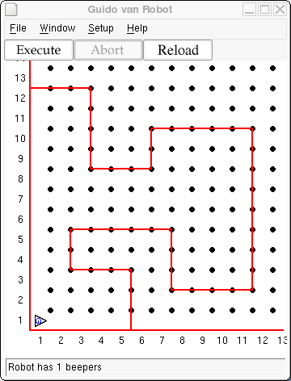

Guido wants to explore his world again. Last time, he picked up the beepers at the corners of his rectangular, bounded world. He also new how many steps it would take him to complete the journey. This time he will need to rely on detecting the walls around him to make the decision as to which way to turn.
Since he won't know the the size of his world in advance, he will not know how many steps it will take to get home. To solve this problem, he will drop a beeper at his starting point. Knowing there are no other beepers in the world, he will continue his journey until he is home. He knows he's home when he finds his beeper again.
Guido starts facing East in the lower left corner of a rectangular, bounded
world with one beeper in his beeper-bag. The world is of unknown size - your
choice. He starts on his journey and continues until he is home. Use a
while statement (looking for his home beeper) and an
if...else to have him complete his adventure. Note: Guido cannot
use a do statement at all, since he has no idea of the dimensions
of the world.
Guido's world has become a lot more interesting. No longer a simple rectangle, Guido now finds himself inside a polygon. If you haven't finished Geometry yet, a polygon is a closed geometric figure made up of line segments joining end to end. A polygon world for Guido might look something like this:

Your mission is get Guido to circumnavigate his new polygonal world. He should once again drop a beeper at his starting position and continue walking along the boarder of his world until he finds the beeper again. This time staying along the wall this time wil be trickier, but that's the challenge.
Copyright © 2003 Roger Frank.